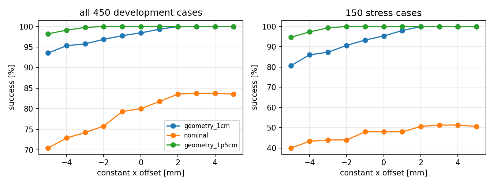
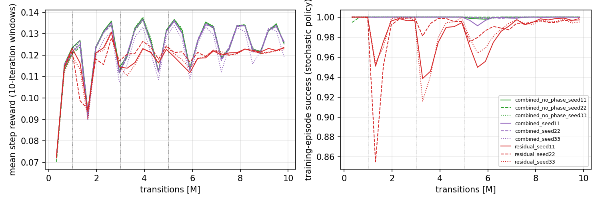
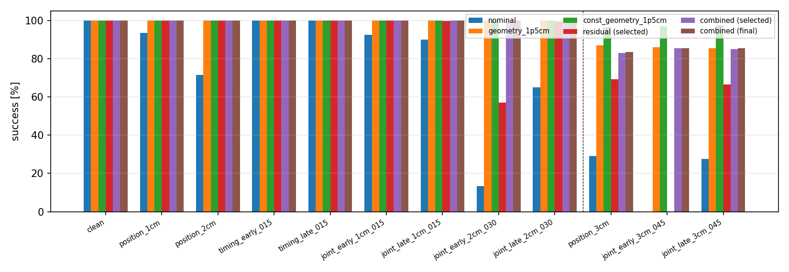

The v1 study found that a training-free geometry module is decisive for the two-Franka bar handover, but its frozen checkpoint selector chose the untrained policy in 8 of 9 runs, so it could not say whether residual reinforcement learning helps. This follow-up audits v1, diagnoses what the archived residual policies do, ablates the geometry module, and runs a new, harder and preregistered v2 experiment with stronger controls.
episode_return
omits the terminal-step reward (E2, logging only). The v1 "untrained" policies are geometry plus a
seed-specific constant offset of 1–2.5 mm, not a zero residual (E3).Evidence types are kept separate below: original v1 results, the corrected v1 presentation, development diagnostics (450–1,150 development cases), v2 pilots, v2 selected checkpoints, v2 final checkpoints and untrained controls. Only the v2 final-suite numbers are held-out test evidence, and v2 was designed after seeing v1 and the development diagnostics.
Two Franka Panda arms with parallel-jaw grippers hand over a rigid 20 cm bar in Isaac Lab v3.0.0 on Isaac Sim 6.2.0.0 with PhysX. A giver holds the bar; the receiver follows a fixed nominal approach-grasp schedule; the giver releases on a (perturbed) schedule. Perturbations shift the bar's start position (per-axis uniform) and the release time. Success requires two continuous seconds in which only the receiver holds the bar (giver open, no giver or table contact, small drift). Controllers act at 20 Hz through differential IK with fixed hand orientations.
| method | receiver target | release |
|---|---|---|
| nominal | nominal schedule | scheduled |
| geometry | nominal + alignment (A) + shared-holding anchor (H) | contact-gated (G), 1 s cap |
| residual | nominal + learned residual 0.02·tanh(a) per axis |
scheduled |
| combined | geometry applied to nominal + learned residual | contact-gated |
| combined_no_phase | as combined, four explicit contact-phase inputs zeroed | contact-gated |
| constant controls | the learned residual replaced by a fixed offset, same composition and bound | as base |
Questions: (Q1) are the v1 artifacts and conclusions reproducible, with any measurement or aggregation defects? (Q2) does a learned residual give useful state-dependent correction beyond zero, random initialization and a tuned constant? (Q3) how much do alignment, anchoring and gated release each contribute? (Q4) does the conclusion depend on the alignment bound? (Q5) under a preregistered, harder but feasible distribution, does residual learning add robust value over a strong geometry controller?
Full table: docs/v2/AUDIT.md; errata: docs/v2/V1_ERRATA.md.
v1.0.0) on the downloaded raw records
reproduces all 18 primary and secondary summary files byte for byte. Records: 19,800 primary and 16,200
secondary, identical case-ID sets, 0 duplicates, 0 invalid resets, 0 infrastructure errors.stress: 1,200 non-stress cases (clean +
five in-range conditions) and 600 stress cases. Only the labels "1,400 / 400" were wrong; the corrected v1
table is in report-v1-corrected.pdf of the v2 release.DirectRLEnv.step calls _get_dones (where records are written)
before _get_rewards, so episode_return misses the terminal step (e.g. 4.66 recorded vs 14.76 full for a
clean success). PPO trained on the correct per-step rewards and no v1 result used the field; v2 records the
full return.tanh bound), frozen deterministic normalization at evaluation,
geometry composition, release timing, timeout bootstrapping, reset retries, per-environment state isolation
and the success logic were checked against the code and the installed libraries. Negative controls behave
physically: with a table under the bar the receiver grips at 17 N per finger and the giver is open, but the
table carries 1.3–1.6 N and the hold timer never starts (0/20 successes).Details and traces: report/v2/diagnostics.md. On 450 fresh development cases with the v1 task configuration:
| controller (development, 450 cases) | stress (150) | all (450) |
|---|---|---|
| geometry + zero residual | 95.3 | 98.4 |
| geometry + constant +3 mm (selected here) | 100.0 | 100.0 |
| v1 combined, untrained step 0 (3 seeds) | 98.7 / 100 / 89.3 | 99.6 / 100 / 96.4 |
| v1 combined, trained final (3 seeds) | 88.7 / 94.7 / 93.3 | 96.2 / 98.2 / 97.8 |
| nominal / nominal + 4 mm | 48.0 / 51.3 | 80.0 / 83.8 |
| v1 residual final (3 seeds) | 52.0 / 54.0 / 61.3 | 84.0 / 84.7 / 87.1 |
All seven geometry failures have an object x offset of +17 to +19 mm (beyond the 1 cm alignment bound): the receiver inserts too deep and its palm strikes the bar end. A positive x offset shortens the insertion. The v1 combined policies learned a near-constant offset in the negative direction (−1.0 to −2.5 mm; across-case spread ≤ 0.4 mm; slope against the object's offset ≈ 0), and they fail precisely on cases with offsets of +15 to +19 mm. Their untrained versions are also constants (+1.4, +1.0, −2.5 mm) and their success follows the sign. The residual-only policies are state dependent (slope 0.07–0.16 against the object offset) and gain +7.8 pp on stress over nominal, but only +4.4 pp [−2.0, +11.3] over the best constant.

Details: report/v2/geometry_ablation.md. Held-out v2 suite, residual = 0:
| combination | 1 cm bound: all | extrapolation | 1.5 cm bound: all | extrapolation |
|---|---|---|---|---|
| none (= nominal) | 65.2 | 18.5 | 65.3 | 18.7 |
| A | 83.6 | 49.0 | 89.1 | 57.5 |
| G | 72.5 | 29.3 | 72.6 | 29.3 |
| H | 65.2 | 18.0 | 65.2 | 18.0 |
| A+G | 92.0 | 74.5 | 96.6 | 86.5 |
| A+H+G (full) | 91.9 | 74.3 | 96.5 | 86.2 |
Main effects (2^3 contrasts, all cases): A +18.9 pp [+17.5, +20.3] at 1 cm and +24.0 [+22.5, +25.6] at 1.5 cm; G +7.8 [+6.9, +8.8] and +7.3 [+6.5, +8.2]; H +0.0 and −0.1. The gate's value depends on alignment: given A, it adds +8.0 pp on ±2 cm cases but +25.5 pp on ±3 cm cases (1 cm bound). The development reproduction check matched full A+H+G to v1 geometry in 449/450 cases (450/450 for "none" vs nominal). Alignment-bound sweep (all cases): 84.0 / 91.9 / 96.5 / 98.3% at 0.5 / 1 / 1.5 / 2 cm. The direction of every conclusion holds at every bound; the absolute extrapolation performance does not.
Protocol: docs/v2/PROTOCOL.md (frozen at tag experiment-v2, protocol SHA-256
bd79ae51…). Main changes from v1: training curriculum reaching ±2 cm / ±0.30 s; 1.5 cm geometry in combined
methods; zero-mean actor initialization; step 0 excluded from selection with new tie-breaks; 400-case
stratified validation; final suite of 12 conditions × 200 fresh cases including three ±3 cm extrapolation
conditions; constant controls selected on 750 development cases (nominal +9 mm, geometry 1 cm +7 mm,
geometry 1.5 cm +10 mm, all along x).
Feasibility and pilots (development only). All ±3 cm resets were valid and 2 cm geometry solved 90–100%, so the extrapolation conditions were admitted. The ±2 cm / ±0.30 s training distribution is already solved by 1.5 cm geometry on development cases; this saturation was disclosed rather than changed (weakening geometry was ruled out). Two pilot configurations differing only in actor initialization were run (14.75M of the 15M pilot budget). The predeclared rule chose the zero-mean initialization (P2: 96.8% vs P1 97.6% mean success on 1,150 development cases, within the 1 pp margin). Neither combined pilot improved on its zero-residual comparator; the residual pilot improved from 62% to 90%.
Training and selection. Nine runs (residual, combined, combined_no_phase × seeds 11/22/33), each 10,027,008 transitions (8.45–8.46M of them scored, i.e. with the residual active); all five candidates per run validated on 400 cases. The rule selected checkpoints at 2M–10M; combined and combined_no_phase candidates scored 94.2–98.5% on validation (development proxy of 1.5 cm geometry: 98.5%), so several selections were decided by the declared tie-breaks.

Reconciliation. 117,600 episodes were scheduled from the evaluation manifest and 117,600 recorded: 0 missing, 0 duplicates, 0 invalid resets, 0 infrastructure errors, no reset retries. Four deterministic entries are identical configurations and reuse records (e.g. ablation A+H+G at 1 cm = geometry 1 cm).
| controller | inner (1,200) | outer ±2 cm (600) | extrapolation ±3 cm (600) | all (2,400) |
|---|---|---|---|---|
| nominal | 96.0 | 50.0 | 18.8 | 65.2 |
| nominal + 9 mm | 99.9 | 57.0 | 20.3 | 69.3 |
| geometry 1 cm (v1 setting) | 100.0 | 93.3 | 74.3 | 91.9 |
| geometry 1.5 cm | 100.0 | 100.0 | 86.2 | 96.5 |
| geometry 1.5 cm + 10 mm | 100.0 | 100.0 | 97.0 | 99.2 |
| residual, selected (mean of 3 seeds) | 99.9 | 85.5 | 45.2 | 82.6 |
| residual, final | 100.0 | 85.6 | 45.9 | 82.9 |
| combined, selected | 100.0 | 100.0 | 84.4 | 96.1 |
| combined, final | 100.0 | 100.0 | 84.7 | 96.2 |
| combined, untrained (step 0) | 100.0 | 100.0 | 86.2 | 96.5 |
| combined_no_phase, selected | 100.0 | 100.0 | 85.2 | 96.3 |
Per-seed all-case success: residual 82.2 / 82.8 / 82.9; combined 96.0 / 96.2 / 96.2; combined_no_phase
96.1 / 96.1 / 96.6. Per-condition results: results/v2/summary/tables.md.

Paired seed × case bootstrap (10,000 replicates), percentage points, all 2,400 cases; Holm-adjusted p over the five primary comparisons.
| comparison | selected checkpoints | Holm p | final checkpoints |
|---|---|---|---|
| combined − geometry 1.5 cm | −0.4 [−0.8, −0.2] | 0.004 | −0.4 [−0.6, −0.1] |
| combined − (geometry 1.5 cm + 10 mm) | −3.2 [−4.0, −2.3] | < 0.001 | −3.1 [−3.9, −2.2] |
| residual − nominal | +17.4 [+15.9, +19.0] | < 0.001 | +17.7 [+16.1, +19.2] |
| residual − (nominal + 9 mm) | +13.3 [+12.0, +14.7] | < 0.001 | +13.6 [+12.2, +15.0] |
| combined − combined_no_phase | −0.2 [−0.6, +0.2] | 0.37 | −0.1 [−0.3, +0.1] |
By group: combined − geometry 1.5 cm is exactly 0 on inner and outer cases and −1.8 [−3.1, −0.7] on extrapolation; combined − (geometry + constant) is −12.6 [−16.0, −9.3] on extrapolation (Cohen's h −0.46). Residual − (nominal + constant) is 0.0 on inner, +28.5 [+24.6, +32.5] on outer and +24.9 [+21.7, +28.3] on extrapolation. Collision-episode rates: combined has +0.7 pp more than geometry and +4.2 pp more than geometry + constant; residual has +8.8 pp more than nominal + constant.
Untrained controls. The zero-mean untrained combined policies are behaviourally identical to 1.5 cm geometry (residual exactly 0); their records differ from the geometry records in 2 of 2,400 cases (the same two cases for all six untrained combined/no-phase policies), and the untrained residual policies differ from nominal in 10 of 2,400. This is the run-to-run nondeterminism floor of the batched simulator across evaluation processes. Trained combined policies are −0.4 pp [−0.8, −0.1] below their untrained versions.
| policy (held-out) | mean signed residual x [mm] | across-case std x [mm] | slope vs object x | failures with object x > +20 mm |
|---|---|---|---|---|
| combined s11 / s22 / s33 (selected) | −2.4 / −2.1 / −1.2 | 0.3 / 0.3 / 0.6 | −0.01 / +0.02 / −0.00 | 96/97, 92/92, 92/92 |
| residual s11 / s22 / s33 (selected) | −1.2 / −2.9 / −1.8 | 2.0 / 2.1 / 1.6 | +0.13 / +0.12 / +0.10 | 93/427, 94/414, 92/410 |
The v2 combined policies repeat the v1 pattern: a near-constant negative x offset, failures concentrated where the object is shifted more than 2 cm towards the receiver (beyond the 1.5 cm alignment bound), i.e. where a positive offset is needed. PPO with the given reward does not find the beneficial direction even though it is reachable within the ±2 cm residual bound; in the training range nothing distinguishes the directions (1.5 cm geometry already succeeds), and the action-magnitude penalty favours small residuals. The residual-only policies, which face visible failures during training, learn a partial state-dependent correction (it follows ~10–13% of the object's x offset) that a constant cannot reproduce.
Videos (10, selected by the frozen rule; every single-environment replay matched its evaluation record):
matched nominal / geometry / combined comparison on v2final-joint_early_2cm_030-0000; alignment-only vs
alignment + gate (release-gate rescue, rule fallback because no in-training drop occurred); 1 cm vs 1.5 cm
geometry (alignment-bound example, palm collision vs success); a combined success and a combined failure in
extrapolation; a residual success where nominal fails. Index: videos.json in the release.
Commands: docs/v2/REPRODUCE.md. Source: tag experiment-v2 (experiment code and
frozen protocol); analysis, report and packaging on branch study/v2-diagnostics (tag in the release
notes). The release contains all raw records (development, pilot, validation, final, audit replays, negative
controls), every checkpoint of every v2 run and pilot, logs, videos with sidecars, and indices
(runs.json, checkpoints.json, videos.json, manifest.json, archive_inventories.json,
SHA256SUMS). scripts/v2_analyze_final.py, scripts/v2_analyze_dev.py and scripts/v2_select_constants.py
regenerate every table and figure from the downloaded records.
[1] D. Frau-Alfaro, J. Castaño-Amorós, S. Puente, P. Gil, R. Calandra. "Learning Dexterous Object Handover." IEEE RO-MAN 2025, pp. 380–387. doi:10.1109/RO-MAN63969.2025.11217592. arXiv:2506.16822.
[2] T. Johannink, S. Bahl, A. Nair, J. Luo, A. Kumar, M. Loskyll, J. A. Ojea, E. Solowjow, S. Levine. "Residual Reinforcement Learning for Robot Control." IEEE ICRA 2019, pp. 6023–6029. doi:10.1109/ICRA.2019.8794127.
[3] T. Silver, K. Allen, J. Tenenbaum, L. Kaelbling. "Residual Policy Learning." arXiv:1812.06298, 2018.
[4] K. Li, P. Li, T. Liu, Y. Li, S. Huang. "ManipTrans: Efficient Dexterous Bimanual Manipulation Transfer via Residual Learning." CVPR 2025.
[5] Y. Zhu, J. Wong, A. Mandlekar, R. Martín-Martín, et al. "robosuite: A Modular Simulation Framework and Benchmark for Robot Learning." arXiv:2009.12293, 2020.
[6] M. Mittal et al. "Isaac Lab: A GPU-Accelerated Simulation Framework for Multi-Modal Robot Learning." arXiv:2511.04831, 2025. Software: Isaac Lab v3.0.0.
[7] C. Schwarke, M. Mittal, N. Rudin, D. Hoeller, M. Hutter. "RSL-RL: A Learning Library for Robotics Research." arXiv:2509.10771, 2025. Software: rsl-rl-lib 5.5.1.
[8] J. Schulman, F. Wolski, P. Dhariwal, A. Radford, O. Klimov. "Proximal Policy Optimization Algorithms." arXiv:1707.06347, 2017.
Software reused. NVIDIA Isaac Sim 6.2.0.0 (PhysX), Isaac Lab v3.0.0 (BSD-3-Clause; Franka Panda asset
configuration, differential IK controller, contact sensors, Newton Warp renderer, RSL-RL wrapper and runner
helpers), RSL-RL 5.5.1 (PPO, BSD-3-Clause), PyTorch 2.11, NumPy, Matplotlib, imageio/FFmpeg, python-pptx
(presentation). Environment lock: configs/v2/frozen/pip-freeze.txt (identical to v1). No external datasets
or demonstrations were used.
AI assistance. As in v1, the follow-up implementation, experiments, analysis code, figures, this report
and the presentation were produced by an AI coding agent (Anthropic Claude, operating through Claude Code)
working from the repository's written assignment on the owner's behalf, on the owner's account and compute.
Every design decision is logged with UTC time and evidence in docs/v2/DECISIONS.md; all numbers come from
the checked-in analysis scripts applied to the archived raw records. No course rubric, template or AI-use
policy was supplied, so no claim of compliance with such rules is made.